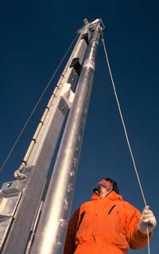
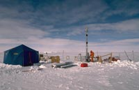
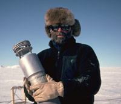
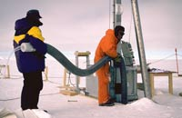
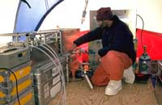
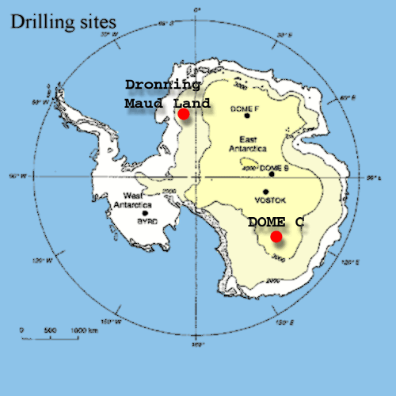
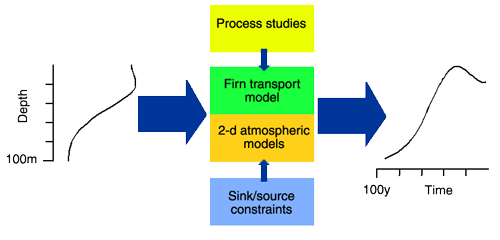

This file contains background information about the FIRETRACC Project data held at the BADC.
The FIRETRACC project aims are to determine the history of numerous trace gases of both man-made (pollution) and natural origin over the 20th century in the global atmosphere. This has been achieved by pumping ‘old’ air out of deep unconsolidated snow (known as ‘firn’) that accumulates to depths of around 50 to 100 m on the polar ice caps of both hemispheres. The resulting firn air samples from the Arctic and Antarctic were returned to Europe, where they were examined with a battery of highly sensitive state-of-the-art gas analysers in a number of research laboratories. The measured concentrations were then processed using computer-based models of both the physical migration of gases through firn, and of their chemical behaviour and transport in the global atmosphere. In this way we have been able to both reconstruct the past history of these gases since the first half of the 20th century, and also to assess the implications of these changes for past atmospheric composition and chemistry.
The project has been highly successful with all three planned polar firn drilling and firn air extraction expeditions successfully completed. This is recognised in glaciological circles as a considerable accomplishment in itself. The firn air samples have been analysed for well over eighty separate trace gases, and thirteen different isotopic measurements of CO2, CH4, CO and permanent gases (O2, N2, Ar, Kr). These are by far the most comprehensive measurements of past atmospheric composition made to date.
For the majority of gases measured, the time frame of the firn air samples encompasses most of their history of human production and emission during the period of intense 20th century industrialisation. The records show a variety of growth rates of different trace gases. Some clearly peaked at dates ranging from the early 1970’s to the 1990’s and have since declined. Some have reached almost level concentrations, whilst others have continued to rise throughout. We are now able to much better define the relative contribution of natural sources, where they exist, for the gases measured, and thus assess the impact of human activity of the chemical composition of the atmosphere. Comparisons of trends between the two hemispheres are particularly informative, since differential behaviour points to changes in global atmospheric chemical processes.
A major outcome of the project has been the observation that, despite the very large changes in pollution levels clearly observed in firn air, notably in the Northern Hemisphere, there is no evidence for substantial changes in global levels of the hydroxyl radical (OH). OH is the primary oxidising agent by which the atmosphere rids itself of many ozone-depleting and global-warming gases. This cleansing action - the ‘oxidising capacity’ – of the atmosphere therefore appears to be relatively robust against wholesale changes in global pollution load.
We have also measured all of the key gases involved in chemical destruction of stratospheric ozone. We have, therefore, an almost complete record of changes in the composition of the stratosphere, that can be used to help us understand both past and potential future sensitivity of stratospheric ozone to changing pollution emissions.
By studying the past response of the atmosphere to changes in pollution levels we shall be better able to predict the effect of future changes in pollution loading, either negative or positive, on the radiative balance and chemical reactivity of the Earth’s atmosphere. Furthermore, the findings of this work on air-snow transfer, and the improvements in diffusion and thermo-diffusion modelling, together provide a fundamental advance in the knowledge base needed to interpret ice core records spanning longer time periods, such as climatic cycles.
The data from FIRETRACC is to be permanently archived by an independent database provider (the British Atmospheric Data Centre). Starting 31 July 2001 this data will become accessible to the public via an intuitive web-based interface (http://www.badc.rl.ac.uk/data/firetracc). The web pages will also contain information on the programme. Not only will the data be available, but so too will the improved firn diffusion model developed during the course of FIRETRACC. This will be a valuable asset to other researchers with an interest in firn air, as well as to others from wider fields studying the diffusion of gases through porous media (e.g. oil and gas exploration, groundwater resources and pollution, etc.).
The project has been highly pro-active in disseminating it’s findings. A number of publications have been written in top ranking journals such as Science, the Journal of Geophysical Research, and Geophysical Research Letters. There have also been numerous presentations of FIRETRACC findings at prestigious international symposia. These include meetings of the European Geophysical Society, the American Geophysical Union, the International Global Atmospheric Chemistry Project, the International Union of Geodesy and Geophysics, the International Association of Meteorology and Atmospheric Sciences, and the Commission on Atmospheric Chemistry and Global Pollution. We also convened a Special Session on "Atmospheric composition and chemistry of the 20th century from firn records" at the European Geophysical Society's XXV General Assembly and Millennium Conference in Nice, 25 - 29 April 2000.
Extraction of firn-air from boreholes drilled into the ice sheet has a ten-year long history, with early work in using this techniques carried out by French and Swiss (J. Schwander, et al., J. Geophys. Res., 98, 2831-2838, 1993). However, in recent years the technique has become more widely used with the development of modern instruments for measuring extremely low levels of trace gases, and the isotopic composition of major atmospheric gases. Generally though, the technique for the extraction of the firn-air remains similar to that used by the early pioneers in this field: a borehole is drilled into the ice sheet to the desired depth, then an bladder is lowered to the bottom of the borehole and inflated to block the passage of air from above. Air is then extracted by pumps at the surface from the small space beneath the bladder and compressed into flasks for later analysis. The main advantage of this technique for sampling air is the very high volumes that can be extracted since the air pocket beneath the bladder is constantly replenished by leakage from the surrounding firn. In contrast, air trapped in bubbles in the ice is usually only available in small volumes.
The firn-air pumping system consists of 5 items: an inflatable bladder, with aluminium end-caps; tubing to carry the firn-air from depth to the surface; a diaphragm pump for managing the air-pressure in the bladder; a metal-bellow pump for filling the low-pressure flasks; a piston pump for filling high-pressure flasks. The inflatable bladder assembly (Figure 1) consists of a 5m length of 140mm diameter rubber tube, mounted onto two end caps. At all sites, the lower end cap incorporated a baffle system (the "Bender-baffle" – initially suggested by Dr. Mike Bender of Princeton University) to eliminate the possibility of blocking the sample tubes by pressing the into the firn at the bottom of the hole, and to provide two compartments from which the air is pumped – the detail is shown in Figure 2. Of the two gas samples tubes, one projected into the upper compartment of the baffle, while the second projected into the lower compartment. When extracting the low volume samples, the upper compartment was pumped to the surface and on to waste at high flow rate, while the lower compartment was pumped at a lower flow rate and compressed into the sample flasks. This reduced contamination of the sample from any slight leakage past the lower end cap.
At each site, a LI-CORR CO2 analyser was available to monitor CO2 levels in real time. During firn pumping this level would slowly fall from the modern ambient level (present from the air forced down the borehole by the piston effect) to achieve a constant value that represented the value in the air flowing into the bottom of the borehole from the surrounding firn. Once the constant level was achieved, and we were confident that the correct firn-air was being drawn from the hole, the sample flasks could be filled.
|  | The drilling rig in operation at Dome C, under the watchful eye of Alain Manouvrier from CNRS-LGGE. |
|  | The Dome C, Antarctica, ice drilling camp during the 1998/99 austral summer expedition. |
|  | Dr. Rob Mulvaney of BAS holding the business end of the firn hole seal, showing the arrangement of baffles used in combination with differential pumping to ensure clean extraction of firn air. |
|  | The firn seal about to be lowered down the freshly drilled core hole. It's a tight fit: the end caps are only slightly smaller than the hole. The 100 m long bundle of air sampling and inflation lines can be seen emerging from the top end cap of the bladder. |
|  | Inside the tent, in somewhat greater comfort, the slow process of extracting air samples at each drilling level begins. A low pressure SilcoCan is being filled in the picture from the high-purity metal bellows pumping system. A high pressure cylinder for isotope analysis samples can be seen on the right. It requires the addition of a multi-piston compressor, seen behind Dr. Mulvaney, to achieve high sample pressures. The LiCORR infrared CO2 analyser, used to check the cleanliness of air coming out of the borehole, can been seen on the far left. |
Samples have been collected in both hemispheres. This is important to obtain a global picture of the changing composition of the atmosphere. By comparing hemispheres we can deduce a lot about the sources of the gases we measure, whether they are natural or human-made, how quickly the gases are broken down by natural processes in the atmosphere, and whether human-influences have upset these natural cleansing processes.

The sampling locations were at Devon Island Ice Cap, Canada, and Dronning Maud Land and Dome Concordia (‘Dome C’) in Antarctica.
| Site | Date | Lat, long | Elevation (m) | Mean Annual Temp (°C) | Transition depth (m) | Snow Accumulation Rate (cm water equiv. y-1) |
| Dronning Maud Land (DML), Antarctica | Jan 1998 | 77°S, 10°W | 2300 | -39 | 73.5 | 7 |
| Devon Island (DI), Canada | Apr 1998 | 75°N, 82°W | 1800 | -23 | 59 | 30 |
| Dome C, Antarctica | Jan 1999 | 75°S, 124°E | 3240 | -53 | 99.5 | 3 |
Firn air (air trapped in deep polar snow) has been collected and analysed to determine a record of trace gases in the Northern and Southern hemispheres from the early-mid 20th century to the present day. An improved firn air pumping system was developed allowing both low and high pressure samples to be collected cleanly and quickly. Samples were collected by drilling to successive depths, and at each depth letting down an inflatable seal and pumping inlet. In situ monitoring of CO2 allowed field verification that only ‘old’ air was being collected during pumping operations. Attention was given to the sample containers used to ensure sample stability during transport and storage. Pumping of large volumes of air allowed samples to be circulated between laboratories for repeated analysis of different suites of trace gases at ultra-trace levels, and even full isotopic composition of trace gases such as CO and CH4.
Samples were analysed with a range of instruments, mostly based on gas chromatography and/or mass spectrometry. The key measurements included CO and CH4 and their isotopic composition, hydrocarbons, alkyl nitrates, reactive halocarbons and COS. Trends of the more stable trace gases were also determined (e.g. CO2, CH4, N2O, CFCs, SF6, perfluorocarbons, etc.).

A firn diffusion model, operating in both direct and inverse modes, was developed and validated using multiple trace gas measurements. Measurements of isotopes and concentration ratios of permanent gases enabled gravitational and thermal effects to be properly modelled and accounted for. Firn diffusion modelling was combined with 2-D atmospheric chemical models to determine the trends of the trace gases of interest.
Trace gases
CO2, CO, CH4, N2O
´13C, ´14C, ´2H, ´18O of CO and CH4
´ 85Kr, ´15N2, ´18O2, ´36Ar, O2/N2, Ar/N2, O2+Ar/N2
CFCs –11, -12, -13, -113, -114, -114a, -115
HCFCs –21, -22, -141b, -142b, -123
HFCs -23, -134a, -143a, -152a, -125
Halons –1202, -1211, -1301, -2402
Perfluorocarbons CF4, C2F6, C3F8, c-C4F8
Bromocarbons CH3Br, CHBr3, CH2Br2, CH2BrCl, CHBrCl2, CHBr2Cl, C2H5Br, C2H4Br2
Chlorinated solvents CH3Cl, CH2Cl2, CCl4, CHCl3, C2Cl4, CH3CCl3, C2H5Cl, CHClCCl2, CH2ClCHCl2, CHCl2CHCl2
Iodocarbons CH3I, C2H5I, CH2ClI
Organosulphurs COS, CS2, DMS, DMDS
Fluorosulphurs SF6
Alkyl nitrates: C1-C3 RONO2, C4-C5 RONO2
NMHCs: ethane, C3-C6 straight and branched alkanes, benzene, toluene, etc.
{kind=link}
{kind=link}
{kind=link}
{kind=link}
{kind=link}